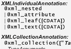

s.im.pl guide
S.IM.PL (Support for Information Mapping in Programming Languages) is the best-in-class open source software architecture for developing distributed programs that share and store complex data structures.
- The programmer says which fields in a data structure should be shared and/or persisted by sprinkling our Data Binding Annotation Language (DBAL) directly into class and field declarations in Java or C#, or by using meta-metadata to declare types.
- S.IM.PL's cross-language type system (built with ClassDescriptor, FieldDescriptor, ScalarType, and SIMPLTypeScope) encapsulates all type information to optimize de/serialization of objects, and to ferry type information from one language to another. The same structures S.IM.PLify Object-Oriented Distributed Semantic Services (OODSS).
- The cross-language code generators enable generating equivalent object declarations in Java, C#, Objective C, and JavaScript from a SIMPLTypeScope. We hope to add Python and C++ to the mix through GSoC 2012.
- S.IM.PL de/serialization enables persisting complex data structures by storing them as XML, JSON, or binary files, or as tables in a relational database. In addition to cross-language type information, SIMPLTypeScopes also optimally capture all data binding details. DBAL gives the developer fine-grained control of exactly how de/serialization will work, e.g., of how the XML will look. Serialized data can be concise and readable. Graph data structures are optimally captured and represented.
Developers will find that for just persisting complex data structures, the popular solution of using hibernate and SQLite is a real pain compared to our S.IM.PLicity.
There is no need to declare special getters and setters. Our type system will do the lifting for you!
Developers will also find using S.IM.PL Object-Oriented Distributed Semantic Services is a breeze for passing complex data structures around between programs. It is more powerful and expressive than typical web services, XML-RPC, protocol buffers, and other similar solutions.
The same DBAL annotations power de/serialization and OODSS message passing. So distributed application developers don’t need to deal with multiple libraries.
S.IM.PL Serialization is a cross-platform framework for multi-format object de/serialization and binding.
A major research contribution is the translation scope, a platform-independent encapsulation of a set of types (classes and fields), and their bindings to tags during serialization.
Programmers use an annotation language to make fine-grained declarations, embedded in their own object source code, of which fields are serialized, and how.
An extensible scalar type system controls de/serialization of scalar fields.
De/serialization of collections and maps, regular and polymorphic fields, and object graphs are all gracefully supported.
provides fine-grained control for annotating object declarations to define the semantics of serialization through meta-language embedded directly in source code.
Objects can be de/serialized as XML, JSON, BibTex (limited structure), and binary TLV.
Hints enable defining the representation of format-specific details, such as whether scalars are serialized as attributes or leaf elements.
Java and C# are supported as object definition languages, with Objective C supported as a target language.
Objects annotated in an object definition language can be cross-compiled, with de/serialization capabilities, to any of the other languages.
Support is planned for C++ and Python.
Object-Oriented
Distributed Semantic Services (OODSS) builds on S.IM.PL
serialization to develop an object-oriented semantic communications
framework for message passing and remote method invocation. The goal is
to simplify practical distributed computing for software developers.
Again, semantics are represented with metalanguage and translation
scopes, with Java supported for servers and clients, and Objective-C for
clients. In comparison with approaches such as SOAP, consistent strong
typing of data structures and fields reduces the burden on programmers.
Meta-Metadata is a platform-independent
language for specifying strongly typed metadata data structures, extraction and instantiation of metadata types from particular information sources,
operations on metadata types, and presentation rules.
Meta-metadata builds on S.IM.PL serialization, using its descriptions of the structures of classes and fields to connect data structures with meta-meta-information,
enabling development of reusable code for processing of information from templated web site sources by curators writing scripting language.
publications
 Shahzad, N.,
S.IM.PL Serialization: Type System Scopes Encapsulate Cross-Language, Multi-Format Information Binding,
Texas A&M University Masters Thesis, 2011.
Shahzad, N.,
S.IM.PL Serialization: Type System Scopes Encapsulate Cross-Language, Multi-Format Information Binding,
Texas A&M University Masters Thesis, 2011.
 Qu, Y., Kerne, A., Webb, A.M., Herstein, A.
Interoperable Metadata Semantics with Meta-Metadata: A Use Case Integrating Search Engines. Proc ACM DocEng 2011, Mountain View, CA, USA, Sept. 20-22, 2011, 171-174 [DOI=10.1145/2034691.2034729].
Qu, Y., Kerne, A., Webb, A.M., Herstein, A.
Interoperable Metadata Semantics with Meta-Metadata: A Use Case Integrating Search Engines. Proc ACM DocEng 2011, Mountain View, CA, USA, Sept. 20-22, 2011, 171-174 [DOI=10.1145/2034691.2034729].
 Kerne, A., Qu, Y., Webb, A.M., Damaraju, S., Lupfer, N., Mathur, A.
Meta-Metadata: A Metadata Semantics Language for Collection Representation Applications,
Proc ACM Conference on Information and Knowledge Management,
Toronto, Ontario, Canada, October 26-30 2010.
Kerne, A., Qu, Y., Webb, A.M., Damaraju, S., Lupfer, N., Mathur, A.
Meta-Metadata: A Metadata Semantics Language for Collection Representation Applications,
Proc ACM Conference on Information and Knowledge Management,
Toronto, Ontario, Canada, October 26-30 2010.
 Toups, Z.O., Kerne, A., Webb, A.,
A Lightweight Object-Oriented Distributed Services Framework for Engineering Interactive Applications,
Interface Ecology Lab Technical Report 10-01
Toups, Z.O., Kerne, A., Webb, A.,
A Lightweight Object-Oriented Distributed Services Framework for Engineering Interactive Applications,
Interface Ecology Lab Technical Report 10-01  Kerne, A., Toups, Z.O., Dworaczyk, B., Khandelwal, M.
A Concise XML Binding Framework Facilitates Practical Object-Oriented Document Engineering
,
Proceedings of ACM Symposium on Document Engineering,
Sao Paulo, Brazil, 16-19 September 2008.
Kerne, A., Toups, Z.O., Dworaczyk, B., Khandelwal, M.
A Concise XML Binding Framework Facilitates Practical Object-Oriented Document Engineering
,
Proceedings of ACM Symposium on Document Engineering,
Sao Paulo, Brazil, 16-19 September 2008.
 Kerne, A., Damaraju, S., Kumar, B., and Webb, A.
Meta-Metadata: A Semantic Architecture for Multimedia Metadata Definition, Extraction, and Presentation,
Poster and Demo Proceedings of the 3rd International Conference on Semantic and Digital Media Technologies,
Koblenz, Germany, 3-5 December 2008.
Kerne, A., Damaraju, S., Kumar, B., and Webb, A.
Meta-Metadata: A Semantic Architecture for Multimedia Metadata Definition, Extraction, and Presentation,
Poster and Demo Proceedings of the 3rd International Conference on Semantic and Digital Media Technologies,
Koblenz, Germany, 3-5 December 2008.

Kerne, A., Toups, Z.O., Dworaczyk, B., Khandelwal, K.,
Expressive, Efficient, Embedded, and Component-based
XML-Java Data Binding Framework,
Interface Ecology Lab Technical Report 08-06